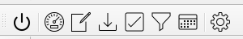
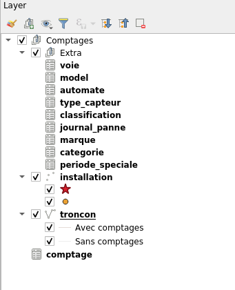
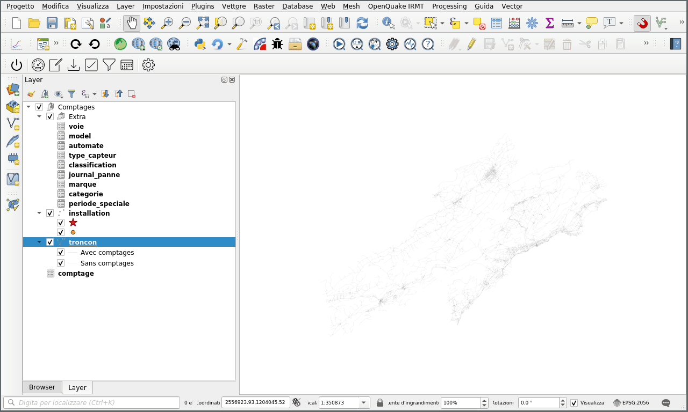
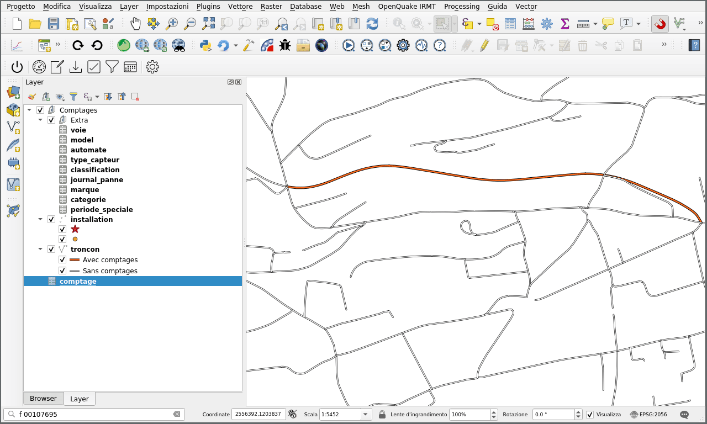

Plugin QGIS
Barre d'outils
Le plugin, une fois installé, ajoute une barre d'outils à l'interface QGIS, composée de plusieurs boutons qui permettent d'effectuer différentes opérations.

Les outils sont, dans l'ordre :
- Connection DB
- Créer un nouveau comptage
- Modifier un comptage
- Importation données
- Validation données
- Filtrage
- Importation fichiers ICS
- Réglages
Utilisation
Connection DB
Le bouton Connection DB ouvre une connexion à la base de données et charge
les couches de l'application dans QGIS.

Créer un nouveau comptage
Pour créer un nouveau comptage (élément dans la couche comptage), il
existe l'outil Créer un nouveau comptage qui simplifie l'opération par
rapport à l'insertion manuelle dans la table.
Pour créer un nouveau comptage à l'aide de l'outil, vous devez commencer par
sélectionner un tronçon sur la carte en utilisant les outils de sélection de
géométrie QGIS normaux. Pour simplifier la recherche du tronçon à
sélectionner, vous pouvez utiliser l'outil de recherche dans la couche
tronçon.
Une fois que vous avez sélectionné le tronçon pour lequel vous voulez créer
le comptage, en appuyant sur le bouton Créer un nouveau comptage vous
pouvez entrer les données du comptage et les sauvegarder dans la base de
données.

Modifier comptage
Après avoir sélectionné un tronçon sur la carte, appuyer sur le bouton
Modifier comptage affiche le tableau d'attributs de la couche comptage avec
les comptages du tronçon sélectionné où vous pouvez éditer les données du
comptage.
